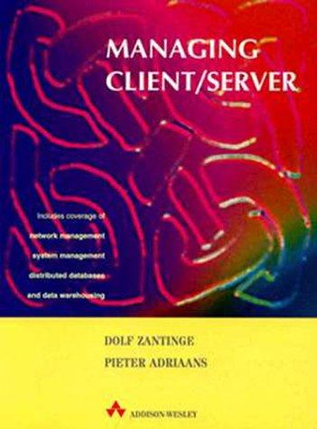
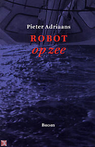

<article class="rj-science-main" id="main">
  <h2>Current research interests:</h2>
  <ul>
    <li>
      The interaction between information and computation
    </li>
    <li>
      Learning as data compression
    </li>
    <li>
      Philosophy of information
    </li>
    <li>
      Information and Art
    </li>
  </ul>

  <h3>Some Publications</h3>

  <div class="rj-flex">

    
    
    
    

  </div>

</article>